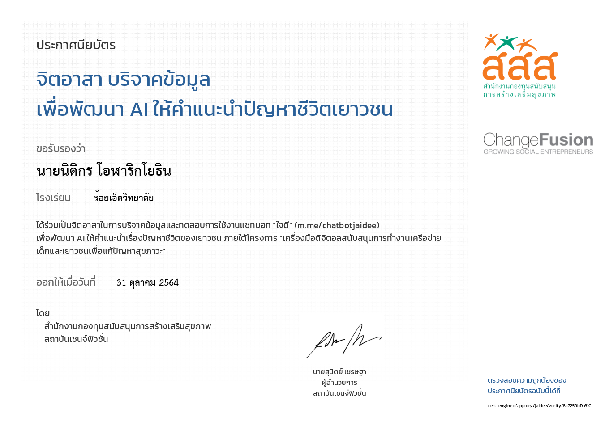

นายนิติกร โอฬาริกโยธิน
Nitikorn
Olarikyothin
ประวัติส่วนตัว
ชื่อ: นายนิติกร โอฬาริกโยธิน
ชื่อเล่น: แซน
อายุ: 17 ปี
เกิด: 8 ธันวาคม พ.ศ. 2547
กรุ๊ปเลือด: O
ศาสนา: พุทธ
สัญชาติ: ไทย
ความสามารถพิเศษ: เล่นกีต้าร์, เขียนภาษาทางคอมพิวเตอร์
มารดา: นางเจษฎา วันดีศรี
บิดา: นายคณิต โอฬาริกโยธิน
ประวัติการศึกษา
ระดับชั้นประถมศึกษา 1 - 6
โรงเรียนอนุบาลร้อยเอ็ด
สายการเรียน: English Program
GPA: 3.23

ระดับชั้นมัธยมศึกษา 1 - 3
โรงเรียนร้อยเอ็ดวิทยาลัย
สายการเรียน: English Program
GPA: 3.56

ระดับชั้นมัธยมศึกษา 4 - 6
โรงเรียนร้อยเอ็ดวิทยาลัย
สายการเรียน: วิทยาศาสตร์ - คณิตศาสตร์ - คอมพิวเตอร์
GPA: 3.72 (4 ภาคเรียน)

ประสบการณ์การแข่งขัน


การเข้าร่วมการแข่งขัน การแข่งขันหุ่นยนต์เพื่อคัดเลือกตัวแทนทีมชาติไทย เข้าร่วมการแข่งขันระดับนานาชาติ
ณ โรงเรียนจตุรมิตริทยาคม อ.ชุมแพ จ.ขอนแก่น
9 - 10 กันยายน 2565
ได้รับรางวัลระดับเหรียญเงินรายการหุ่นยนต์เตะฟุตบอล
ได้รับรางวัลระดับเหรียญเงินรายการหุ่นยนต์ต่อสู้ 2 ตัว
เป็นการแข่งขันหุ่นยนต์เพื่อคัดเลือกตัวแทนทีมชาติไทยครั้งแรกของผม การแข่งขันครั้งนี้ช่วยขัดเกลาให้ผมมีความขยัน อดทน และทำให้ผมได้มีความรู้ ความสามารถในการทำหุ่นยนต์
การเข้าร่วมการแข่งขันการเขียนโปรแกรมด้วยภาษาคอมพิวเตอร์ เนื่องในงานสัปดาห์วันวิทยาศาสตร์ ประจำปี 2565
ณ โรงเรียนร้อยเอ็ดวิทยาลัย
10 สิงหาคม 2565
การเข้าร่วมการแข่งขันการเขียนโปรแกรมด้วยภาษาคอมพิวเตอร์ ทำให้ผมได้นำความรู้ในการเขียนภาษาซีที่ศึกษาและฝึกฝนมาใช้ในการแข่งขันทำให้ผมสามารถได้รับรางวัล ชนะเลิศอันดับ 1
ได้รับรางวัล ชมเชย การประกวดโครงงานคุณธรรม ระดับชั้นมัธยมศึกษาปีที่ 4
ณ โรงเรียนร้อยเอ็ดวิทยาลัย
15 ตุลาคม 2563
ผมได้เป็น 1 ในตัวแทนห้องเพื่อการแข่งขันการประกวดโครงงานคุณธรรม ในการแข่งขันนี้ทำให้ผมได้ทำงานร่วมกับเพื่อนๆภายในทีม แม้เพื่อนๆที่ได้อยู่ในกลุ่มบางคนจะเป็นเพื่อนใหม่ที่ยังไม่เคยรู้จักกันแต่พวกเราก็มีความสามัคคี และช่วยกันแก้ปัญหาจนโครงงานของห้องผมได้รางวัลได้รับรางวัล ชมเชย การประกวดโครงงานคุณธรรม ระดับชั้นมัธยมศึกษาปีที่ 4
เข้าร่วมการแข่งขัน Thailand Online Competitive Programming Contesst 2021
จัดโดย TOCPC
20-21 พฤศจิกายน 2021
สำหรับการแข่งขันนี้ ทำให้ผมได้พบประสบการณ์ใหม่ๆได้ลองอะไรใหม่ๆได้เจอโจทย์การเขียนโปรแกรมในระดับประเทศ ทำให้ผมมีความกระตือรือร้นมากขึ้นที่จะค้นคว้า ศึกษา เรียนรู้ การเขียนโปรแกรมด้วยตนเองมาขึ้น
กิจกรรม
กิจกรรม BIG CLEANING DAY
ณ โรงเรียนร้อยเอ็ดวิทยาลัย
17 มิถุนายน 2565
กิจกรรม "รวมใจไทยปลูกต้นไม้เพื่อแผ่นดิน"
โครงการและกิจกรรมปลูกต้นไม้และปลูกป่าเฉลิมพระเกียรติ เนื่องในโอกาสมหามงคลพระราชพิธีบรมราชาภิเษก
15 กันยายน 2565
ความสามารถ
ภาษาคอมพิวเตอร์และเครื่องมือต่างๆ


มีประสบการณ์
ถนัด
คุ้นเคย
ภาษาอังกฤษ

CU-TEP
ได้คะแนน 47 คะแนน
ในระดับ Intermediate
TU-GET
ได้คะแนน 510 คะแนน
โปรเจค

การเขียนเว็บไซต์ด้วยภาษา HTML,CSS,JavaScript ค่ายCOMCAMP ครั้งที่ 33 ภาควิชาวิศวกรรมคอมพิวเตอร์ คณะวิศวกรรมศาสตร์ มหาวิทยาลัยเทคโนโลยีพระจอมเกล้าธนบุรี
สำหรับการเข้าค่ายโครงการฝึกอบรมเชิงปฏิบัติการคอมพิวเตอร์เบื้องต้น หรือ Comcamp ครั้งที่ 33 ทำให้ผมได้เรียนรู้และฝึกการใช้ภาษา HTML,CSS,JAVASCRIPT ในการใช้เขียนเว็บไซต์นี้ขึ้นมา ได้เจอเพื่อนใหม่จากต่างโรงเรียน ได้เรียนรู้ทักษะการทำงานเป็นทีม
Visit Website
10 - 16 เมษายน พ.ศ. 2565
การเขียนเว็บไซต์ด้วยภาษา HTML,CSS,JavaScript ค่ายCESCaครั้งที่16 สาขาวิชาวิศวกรรมคอมพิวเตอร์ คณะวิศวกรรมศาสตร์ มหาวิทยาลัยขอนแก่น สำหรับการเข้าค่ายเยาวชนวิศวกรรมคอมพิวเตอร์ ภาคฤดูร้อน(CESCa#16) ทำให้ผมได้เรียนรู้และฝึกการใช้ภาษา HTML , CSS , JAVASCRIPT ในการใช้เขียนเว็บไซต์ และได้เรียนรู้การใช้ Flowchart , Github และการควบคุมหุ่นยนต์ VEXCODE VR ทำให้ผมได้ฝึกทักษะการเขียนโปรแกรม การคิดวิเคราะห์ปัญหาและการแก้ไขปัญหาที่พบ 29 เมษายน - 2 พฤษภาคม 2565
Visit Website
29 เมษายน - 2 พฤษภาคม 2565
เกียรติบัตรและรางวัล
Thailand Manual Robot Challenge 2022
ได้รับรางวัลระดับเหรียญเงิน
รายการหุ่นยนต์เตะฟุตบอล
การแข่งขันหุ่นยนต์เพื่อคัดเลือกตัวแทนทีมชาติไทย เข้าร่วมการแข่งขันระดับนานาชาติ
ระหว่างวันที่ 9-10 กันยายน พ.ศ. 2565
Thailand Manual Robot Challenge 2022
ได้รับรางวัลระดับเหรียญเงิน
รายการหุ่นยนต์ต่อสู้ 2 ตัว
การแข่งขันหุ่นยนต์เพื่อคัดเลือกตัวแทนทีมชาติไทย เข้าร่วมการแข่งขันระดับนานาชาติ
ระหว่างวันที่ 9-10 กันยายน พ.ศ. 2565
Thailand Online Competitive Programming Contesst 2021
เข้าร่วมการแข่งขัน Thailand Online Competitive Programming Contesst 2021 วันที่ 20-21 พฤศจิกายน 2021
กิจกรรมการแข่งขันการเขียนโปรแกรมด้วยภาษาคอมพิวเตอร์
ได้รับรางวัล ชนะเลิศอันดับ 1 กิจกรรมการแข่งขันการเขียนโปรแกรมด้วยภาษาคอมพิวเตอร์ ระดับชั้นมัธยมศึกษาปีที่ 4-6 เนื่องในงานสัปดาห์วันวิทยาศาสตร์ ประจำปี 2565 ณ โรงเรียนร้อยเอ็ดวิทยาลัย
การประกวดโครงงานคุณธรรม
ได้รับรางวัล ชมเชย การประกวดโครงงานคุณธรรม ระดับชั้นมัธยมศึกษาปีที่ 4 ณ โรงเรียนร้อยเอ็ดวิทยาลัย
NONNGAM ROBOT CAMP
ได้เป็นผู้ช่วยวิยากร อบรมโครงการขยายผลค่ายเยาวชนหุ่นยนต์(NONNGAM ROBOT CAMP)1 โดยการใช้กระบวนการคิดวิเคราะห์ STEM
Comcamp 33
เข้าร่วมโครงการฝึกอบรมเชิงปฏบัติการคอมพิวเตอร์ ครั้งที่ 33 (Comcamp 33) ระหว่างวันที่ 10-16 เมษายน พ.ศ. 2565

Computer Engineering Summer Camp(CESCa) ครั้งที่ 16
เข้าร่วมโครงการค่ายเยาวชนวิศวกรรมคอมพิวเตอร์ ภาคฤดูร้อน สาขาวิชาวิศวกรรมคอมพิวเตอร์ คณะวิศวกรรมศาสตร์ มหาวิทยาลัยขอนแก่น ระหว่างวันที่ 29 เมษายน - 2 พฤษภาคม 2565

โครงการค่ายอัจฉริยภาพวิศวศิลปากร
ได้ระดับ ดีเด่น ในโครงการค่ายอัจฉริยภาพวิศวศิลปากร
โดย คณะวิศวกรรมศาสตร์และเทคโนโลยีอุตสาหกรรม ภาควิชาวิศวกรรมไฟฟ้า สาขาวิศวกรรมอิเล็กทรอนิกส์และระบบคอมพิวเตอร์ มหาวิทยาลัยศิลปากร

MED x Engineering Together Towards the future
เป็นผู้เข้าร่วมกิจกรรมสัมมนาให้ความรู้ MED x Engineering Together Towards the future โดย สมาพันธ์นิสิตนักศึกษาแพทย์แห่งเอเชียแห่งประเทศไทยและกรรมการนิสิตคณะวิศวกรรมศาสตร์ จุฬาลงกรณ์มหาวิทยาลัย
MAE Online Camp Vol.1
เข้าร่วมโครงการค่ายวิศวกรรมวัสดุ MAE Online Camp Vol.1 จัดโดย สาขาวิชาวิศวกรรมวัสดุ คณะวิศวกรรมศาสตร์ มหาวิทยาลัยเทคโนโลยีราชมงคลรัตนโกสินทร์ วันที่ 18 ธันวาคม 2564
TNI Online Open Campus 2021
ได้เข้าร่วมกิจกรรม TNI Online Open Campus 2021 โดย ศูนย์รับสมัครนักศึกษา สถาบันเทคโนโลยีไทย - ญี่ปุ่น
ค่ายค้นหาตัวตน สะท้อนตัวเอง(ออนไลน์)
ได้เข้าร่วมค่ายค้นหาตัวตน สะท้อนตัวเอง(ออนไลน์) ระหว่างวันที่ 26-27 มิถุนายน 2564 โดย สถาบันส่งเสริมการศึกษาเยาวชน

Workshop How to code with Python
ได้เข้าร่วมการอบรมเชิงปฏิบัติการ Workshop How to code with Python โดย ชุมนุมสร้างเสริมประสบการณ์ชีวิต คณะเทคโนโลยีสารสนเทศ

Workshop Portfolio แบบ Interactive ด้วย Web Technology
ได้เข้าร่วมการอบรมเชิงปฏิบัติการ Workshop Portfolio แบบ Interactive ด้วย Web Technology โดย ชุมนุมสร้างเสริมประสบการณ์ชีวิต คณะเทคโนโลยีสารสนเทศ
RAVEN SIMULATOR STUDIO
ได้เข้าร่วมการทดสอบตนเองในสายงาน DATA SCiENTIST โดย RAVEN SIMULATOR STUDIO
โครงการอบรมการเขียนโปรแกรมควบคุมหุ่นยนต์อัตโนมัติ
ได้เข้าร่วมโครงการอบรมการเขียนโปรแกรมควบคุมหุ่นยนต์อัตโนมัติ ณ โรงเรียนร้อยเอ็ดวิทยาลัย วันที่ 20 และ 27 กุมภาพันธ์ 2564
การพัฒนาทักษะกระบวนการคิดโดยการใช้นวัตกรรมหุ่นยนต์
ได้เข้าร่วมการอบรมเชิงปฏิบัติการ การพัฒนาทักษะกระบวนการคิดโดยการใช้นวัตกรรมหุ่นยนต์ ณ โรงเรียนร้อยเอ็ดวิทยาลัย
วันที่ 23-24 กรกฎาคม พ.ศ. 2565

การเขียนโปรแกรมควบคุมกล่องสมองกล Microbit
ได้เข้าร่วมการอบรมเชิงปฏิบัติการ การเขียนโปรแกรมควบคุมกล่องสมองกล Microbit ณ ห้องปฏิบัติการคอมพิวเตอร์ โรงเรียนร้อยเอ็ดวิทยาลัย
วันที่ 15 มิถุนายน พ.ศ. 2565
SWU Tutor Youth Camp รุ่นที่ 2 (ภาคอีสาน)
ได้เข้าร่วมกิจกรรมค่ายออนไลน์ SWU TUTOR YOUTH CAMP รุ่นที่ 2 (ภาคอีสาน) โดย ชมรมส่งเสริมการศึกษาเยาวชน มหาวิทยาลัยศรีนครินทรวิโรฒ
ระหว่างวันที่ 31 ตุลาคม พ.ศ. 2564

Responsive Web Design
ผ่านการเรียนคอร์สออนไลน์ Responsive Web Design ระยะเวลา 300 ชั่วโมง โดย FREECODECAMP
Machine Learning with Python
ผ่านการเรียนคอร์สออนไลน์ Machine Learning with Python ระยะเวลา 300 ชั่วโมง โดย FREECODECAMP

Scientific Computing with Python
ผ่านการเรียนคอร์สออนไลน์ Scientific Computing with Python ระยะเวลา 300 ชั่วโมง โดย FREECODECAMP

The Disruptor นักเปลี่ยนโลก นักปฏิวัติความคิด
ผ่านการเรียนคอร์สออนไลน์ The Disruptor นักเปลี่ยนโลก นักปฏิวัติความคิด โดย KMITL Learning Intelligence X
วิทยาการคำนวณ : สำรวจหลักสูตรและก้าวแรก Coding
ผ่านการเรียนคอร์สออนไลน์ วิทยาการคำนวณ : สำรวจหลักสูตรและก้าวแรก CODING โดย CHULA MOOC
Deep Learning Fundamentals
ผ่านการเรียนคอร์สออนไลน์ Deep Learning Fundamentals โดย CognitiveClass.ai
Digital Skills:Artificial Intelligence
ผ่านการเรียนคอร์สออนไลน์ DIGITAL SKILLS:ARTIFICIAL INTELLIGENCE โดย Accenture
_page-0001.jpg)
_page-0002.jpg)
Digital Skills:Web Analytics
ผ่านการเรียนคอร์สออนไลน์ Digital Skills:Web Analytics โดย Accenture

จิตอาสา บริจาคข้อมูลเพื่อพัฒนา AI ให้คำแนะนำปัญหาชีวิตเยาวชน
ได้ร่วมเป็นจิตอาสาในการบริจาคข้อมูลและทดสอบการใช้งานแชทบอท "ใจดี"
เพื่อพัฒนา AI ให้คำแนะนำเรื่องปัญหาชีวิตของเยาวชน ภายใต้โครงการ "เครื่องมือดิจิตอลสนับสนุนการทำงานเครือข่าย
เด็กและเยาวชนเพื่อแก้ปัญหาสุขภาวะ"
โดยสำนักงานกองทุนสนับสนุนการสร้างเสริมสุขภาพสถาบันเชนจ์พิวชั่น
_page-0001.jpg)
ผ่านการทดสอบวัดความรู้พื้นฐานเรื่องผลกระทบจากการเล่นพนัน-พนัน
ได้ผ่านการทดสอบวัดความรู้พื้นฐานเรื่องผลกระทบจากการเล่นพนัน-พนันออนไลน์ ด้วยระบบการทดสอบทางไกล (Online) ด้วยคะแนน 90 คะแนน เมื่อวันที่ 10 กุมภาพันธ์ พ.ศ.2563 โดย สถาบันยุวทัศน์แห่งประเทศไทย ภายใต้การสนับสนุนของ สำนักงานกองทุนสนับสนุนการสร้างเสริมสุขภาพ (สสส.)
_page-0001.jpg)
ผ่านการทดสอบวัดความรู้พื้นฐานเรื่องภัยจากบุหรี่และกลยุทธ์ของบริษัทบุหรี่และบุหรี่ไฟฟ้า
ได้ผ่านการทดสอบวัดความรู้พื้นฐานเรื่องภัยจากบุหรี่และกลยุทธ์ของบริษัทบุหรี่และบุหรี่ไฟฟ้า ด้วยระบบการทดสอบทางไกล (Online) ด้วยคะแนน 90 คะแนน เมื่อวันที่ 10 กุมภาพันธ์ พ.ศ.2563 โดย สถาบันยุวทัศน์แห่งประเทศไทย ภายใต้การสนับสนุนของ สำนักงานกองทุนสนับสนุนการสร้างเสริมสุขภาพ (สสส.)
_page-0001.jpg)
ผ่านการทดสอบวัดความรู้พื้นฐานเรื่องกฎหมายการควบคุมเครื่องดื่มแอลกอฮอล์
ได้ผ่านการทดสอบวัดความรู้พื้นฐานเรื่องกฎหมายการควบคุมเครื่องดื่มแอลกอฮอล์ ด้วยระบบการทดสอบทางไกล (Online) ด้วยคะแนน 80 คะแนน เมื่อวันที่ 10 กุมภาพันธ์ พ.ศ.2563 โดย สถาบันยุวทัศน์แห่งประเทศไทย ภายใต้การสนับสนุนของ สำนักงานกองทุนสนับสนุนการสร้างเสริมสุขภาพ (สสส.)

ผ่านการทดสอบวัดความรู้พื้นฐานเรื่องความรู้ทั่วไปในการใช้รถใช้ถนน
ได้ผ่านการทดสอบวัดความรู้พื้นฐานเรื่องความรู้ทั่วไปในการใช้รถใช้ถนน ด้วยระบบการทดสอบทางไกล (Online) ด้วยคะแนน 90 คะแนน เมื่อวันที่ 10 กุมภาพันธ์ พ.ศ.2563 โดย สถาบันยุวทัศน์แห่งประเทศไทย ภายใต้การสนับสนุนของ สำนักงานกองทุนสนับสนุนการสร้างเสริมสุขภาพ (สสส.)
ภาคผนวก

ปพ.1
ผลการศึกษาเฉลี่ย 4 ภาคเรียน: 3.72